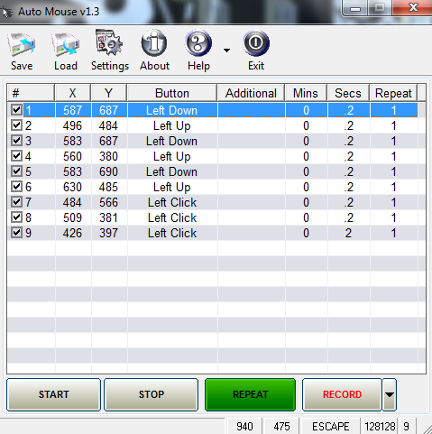

เทคนิคเบื้องหลัง Auto Mouse & Keyboard Macro — การเลือกเครื่องมือ สถาปัตยกรรม และบทเรียนจากการทดลอง
งานซ้ำ ๆ บนคอมพิวเตอร์ เช่น คลิกปุ่มเดิม, กรอกฟอร์มเดิม, ฟาร์มไอเทมในเกม สามารถมอบหมายให้โปรแกรมทำแทนได้ แนวคิดคือ "สคริปต์เหตุการณ์" — รายการเหตุการณ์เมาส์/คีย์ที่เรียงลำดับกัน พร้อมเวลาหน่วงระหว่างขั้น โปรแกรมจะอ่านสคริปต์แล้วจำลองการกด/คลิกแทนมือผู้ใช้
ต้นแบบที่ใช้เทียบคือ Auto Mouse v1.3 (ดูรูป): ตาราง
# / X / Y / Button / Additional / Mins / Secs / Repeat
+ ปุ่ม START / STOP / REPEAT / RECORD ซึ่งเป็น UX ที่เข้าใจง่ายและตรงจุด

ต้นแบบ Auto Mouse v1.3 ที่ใช้เป็นข้อกำหนด UX
| ตัวเลือก | ข้อดี | ข้อเสีย | ผลการพิจารณา |
|---|---|---|---|
| Python + pynput | API สั้น เข้าใจง่าย, ครอบคลุมเมาส์+คีย์, cross-platform, ติดตั้งง่าย | บน macOS ต้องผ่าน Accessibility permission | ✅ เลือกใช้ |
| Python + pyautogui | เอกสารดี, มี screenshot/locateOnScreen | ไม่มี Listener บันทึกเหตุการณ์, บน Linux พึ่ง X11 tools | ผ่าน |
| Python + pydirectinput | ยิง DirectInput ตรง เหมาะกับเกมที่ไม่รับ synthetic input | ไม่มี Listener, ใช้ได้เฉพาะ Windows | ผ่าน (ต่อยอดภายหลัง) |
| AutoHotkey (AHK) | ภาษาสคริปต์เฉพาะทาง แข็งแรงมากบน Windows | เป็นภาษาใหม่ต้องเรียน, นอก ecosystem ของโปรเจกต์ | ผ่าน |
| C# + WinForms | Native Windows, แรง | ผูกกับ Windows, build ยาวกว่า | ผ่าน |
| Electron/Node.js | UI สวยได้ง่าย | ตัวโปรแกรมใหญ่โดยไม่จำเป็น, robotjs ดูแลไม่ค่อยต่อ | ผ่าน |
┌─────────────┐ ผลักเหตุการณ์เข้าคิว ┌──────────────┐
│ pynput │ ────────────────────────▶ │ _pending_rows │ (list ธรรมดา)
│ Listeners │ (เธรดของ listener) │ + _live_pos │
│ (เมาส์+คีย์) │ └──────┬───────┘
└─────────────┘ │ poll ทุก 120 ms (main thread)
▼
┌─────────────┐ ตั้งค่า state dict ┌──────────────┐
│ Player │ ────────────────────────▶ │ UI update │
│ (เธรดแยก) │ (row ที่กำลังเล่น, msg) │ (Tk mainloop)│
└─────────────┘ └──────────────┘
โค้ดที่แตะ widget ต้องรันบน main thread เท่านั้น — การเรียก root.after()
หรือแก้ widget จาก listener thread เป็น race condition เงียบ ๆ ที่พังบ้างบางครั้ง ยากต่อการ debug
root.after()
ปลอดภัยโดยไม่ต้องใช้ Lock เพราะการ assign ตัวแปรเดี่ยวและ append เข้า list ใน CPython
คือ atomic พอสำหรับ use case นี้mouse.Listener(on_move, on_click) + keyboard.Listener(on_press)pressed=True จะถูกจด พร้อม
round(time.time() - t0, 2) เป็นคอลัมน์ Secs → เล่นซ้ำได้จังหวะเดิมkey.char (ตัวอักษร) หรือ str(key) ตัด Key.
(คีย์พิเศษ) — กรองเฉพาะชื่อสั้น ≤ 12 ตัวอักษรเพื่อไม่ให้คอลัมน์ Additional รกon_release — การจด press+release ทำให้ตารางยาวเป็น 2 เท่าโดยไม่จำเป็น
(มี Action Press/Release Key ไว้ใช้เมื่อต้องการจับคู่เอง)mouse_ctl.position = (x, y) แล้ว time.sleep(0.03)
ให้ OS ทันก่อน press/release/clickLeft Down → (ย้ายพิกัด) → Left Upkb_ctl.press/release/tap(k) โดยแปลงชื่อผ่าน parse_key()Mins*60 + Secs (รองรับทศนิยมและลูกน้ำสไตล์ยุโรป เช่น "0,5")Repeat ทำซ้ำในแถวเดียว; ปุ่ม REPEAT วนทั้งสคริปต์; F10 บังคับวนตลอดrunning = False → ลูปเช็คก่อน/หลังทุก sleep และทุก step
→ หยุดได้ทันทีแม้อยู่กลาง sleepmouse_ctl.position ตอนหมดเวลา → ใส่ค่าให้เอง.json รายการของ {enabled, x, y, button, additional, mins, secs, repeat}macro_conf.json ข้างสคริปต์ensure_ascii=False เพื่อให้เปิดไฟล์ด้วย editor ธรรมดาแล้วอ่านรู้เรื่องpynput.keyboard.GlobalHotKeys — listener เธรดแยก เหมือน recorderroot.after(0, fn)PIL.ImageGrab.grab() จับหน้าจอ →
cv2.matchTemplate(TM_CCOEFF_NORMED) → ความมั่นใจ ≥ 0.80 → คลิกจุดศูนย์กลางHAS_CV —
ไม่มี opencv โปรแกรมก็ยังเปิดได้ แถว Image Click แจ้งเตือนตอนเล่นแทนการ crashmacro_profiles.json = dict ชื่อโปรไฟล์ → รายการแถว (โครง JSON เดิมต่อโปรไฟล์)self.running / self.recording)_sched_loop ตรวจทุก 5 วิ → ผลัก "play" เข้า
queue.Queue → _sched_poll (main thread, ทุก 500 ms) หยิบมาเริ่มเล่นเอง —
จุดเดียวที่เริ่มเล่นจริงคือ main thread เสมอnow >= next) และ "รายวัน HH:MM"
(เทียบ timestamp + เก็บ stamp ล่าสุดกันยิงซ้ำในนาทีเดียว)ศึกษา Auto Mouse Click (MurGee) แล้วคัดเฉพาะสิ่งที่ ทำได้จริงด้วย pynput + stdlib และ มีประโยชน์กับผู้ใช้ทั่วไป
| จาก automouseclick.com | ของเรา (v1.5) | หมายเหตุการทำงาน |
|---|---|---|
| Scroll Up/Down | Action Scroll Up/Down + จำนวนจังหวะ | mouse_ctl.scroll(0, ±n) + อัดจาก on_scroll ตอน RECORD |
| Double Click | Double Left/Right Click | click(btn, 2) |
| Ctrl+Click ฯลฯ | Ctrl+Click, Shift+Click, Alt+Click, Ctrl+Right Click | press(mod) → click → release(mod) ใน finally กันคีย์ค้าง |
| Move Mouse / Offset | Move Mouse, Move Mouse by Offset | absolute / relative movement |
| Save/Restore Cursor | Save Cursor, Restore Cursor | เก็บในหน่วยความจำระหว่างรอบเล่น |
| Type Text | Type Text (รองรับไทย) | tap(KeyCode.from_char) ทีละตัวอักษร |
| Launch App / Website | Launch App | os.startfile() + xdg-open fallback |
| Wait for Picture | Wait for Image | จับภาพทุก 0.5 วิ, threshold 0.80, timeout 30 วิ |
| Beep | Beep | root.bell() ไม่ต้องพึ่งไลบรารีเสียง |
| Random Delay | Secs รูปแบบ 1-3 | delay_range() + random.uniform |
| Script Repeat Count | ช่อง "รอบ" (0 = ไม่จำกัด) | ลูปนอกใน _player |
| Speed | ตัวคูณ 0.25×–4× | หารดีเลย์ทุกตัวก่อน sleep |
| (แนวคิด) Cursor Home | checkbox "คืนเมาส์จุดเดิม" | จบทุกรอบย้ายกลับจุดเริ่มเล่น |
Secs = 2 = 2 วิ ตรง ๆ (เดิม), ใส่ 1-3 ค่อยสุ่ม — ไม่ทำสคริปต์เก่าพังdelay_range() คืน (lo, hi) เสมอ → โค้ดเล่นเรียกครั้งเดียวประเด็นสำคัญของ macro บน Windows: เกม/แอปบางตัวอ่าน input ผ่าน DirectInput/Raw Input ซึ่งไม่สนใจ event ที่ flag เป็น "injected"
| pynput (ใช้ในโปรเจกต์นี้) | pydirectinput | |
|---|---|---|
| วิธียิง | SendInput (flag injected) | SendInput (scan code แบบ DirectInput) |
| งานทั่วไป / ธุรการ | ✅ เวิร์คทุกแอปทั่วไป | ✅ |
| เกมสามัญที่รับ injected | ✅ ส่วนใหญ่ | ✅ |
| เกมที่กรอง injected | ❌ | ✅ (ต้องต่อ lib เอง) |
| มี Listener บันทึก | ✅ | ❌ |
โปรเจกต์นี้เลือก pynput เป็นแกน (ครอบคลุม record + play ใน lib เดียว)
ถ้าอนาคตต้องใช้กับเกมที่กรอง injected event ให้เพิ่ม adapter pydirectinput เฉพาะตอน "เล่น" —
โครงสร้าง do_step() แยกอยู่แล้ว ทำได้โดยไม่กระทบส่วนอื่น
--onefile ผ่านไฟล์ spec (auto_macro.spec) เพื่อควบคุมค่าได้ตรงconsole=False เพื่อไม่ให้เด้งหน้าดำnumpy, pandas, matplotlib, PIL, PyQt...) ผ่าน excludes → ลดขนาด/เวลา builddist/AutoMouseMacro.exe ≈ 13 MB, เปิดหน้าต่าง GUI ได้, ปิดสะอาดroot.after() จาก listenerctrl อาจมาเป็น ctrl_l,
win มาเป็น cmd — ตาราง SPECIAL_KEYS ในโค้ดจัดการ alias ให้ครบdelay_seconds, parse_int) อย่าสมมติว่าเป็น intreturn "break" เพื่อไม่ให้กระทบ selection)GlobalHotKeys ของ pynput หรือ RegisterHotKey ของ Windowsenabled: falseGlobalHotKeys (F8/Esc) หรือ Ctrl+C — ใช้ list [True] แทน bool เพื่อ closuresys.stdout.reconfigure(utf-8) + เช็ค buffer กันเคส StringIO ในเทสต์<Button-3> → เปิด tk.Menu: คัดลอกแถว / แทรกบน / แทรกล่าง / ลบselection_set + focus ก่อนเปิดเมนู แล้วเรียก refresh_nums() หลังแก้(done, total, loop_no) เข้า _ui_state["prog"]
→ poller วาด — รูปแบบ thread-safe เดิมttk.Progressbar determinate ใน statusbar แสดง รอบ N • x/y (p%)kb_ctrl_char ผิดตำแหน่ง ทำให้ลูปเล่นทั้งชุดกลายเป็นโค้ดหลัง
return — py_compile ผ่านเพราะ syntactically ถูก